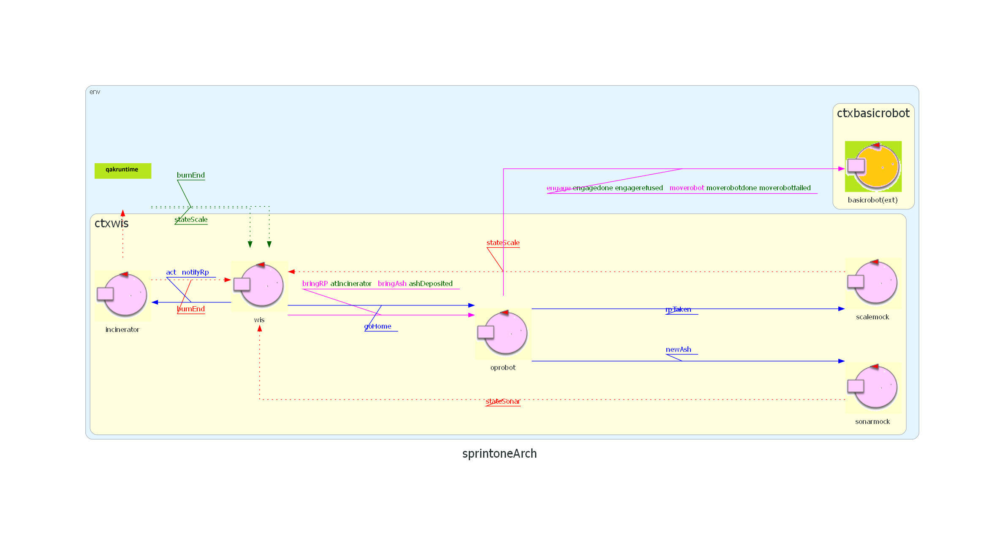

Introduction
Questo documento contiene lo Sprint1 del progetto per il tema finale del corso.
L'obiettivo dello Sprint1 è lo sviluppo della prima architettura del core business, in particolare ciò che riguarda WIS, OpRobot e Incinerator.
Requirements
Per vedere i requisiti visitare la pagina relativa alla richiesta del committente presso TemaFinale24.
Requirement Analysis
L'analisi dei requisiti può essere trovata nello Sprint0.
Problem Analysis
OpRobot
P1 - Modellazione OpRobot
Come precedentemente anticipato nello sprint0 l'architettura ci permette un'estensione nei concetti di rappresentazione e di implementazione.
In questo senso si è deciso di definire l'OpRobot come Attore invece che come POJO: questo porta ad un vantaggio fondamentale, ovvero la possibilità di delegare all'OpRobot la gestione del BasicRobot senza dover passare per il WIS, in modo tale da rendere l'architettura più scalabile e modulare.
P2 - Mappa
Per potersi muovere all'interno dell'ambiente, il robot ha bisogno di una rappresentazione interna della stanza. Questa mappa può essere fornita direttamente, oppure può essere generata in autonomia, nel qual caso è necessario affrontare il problema della sua costruzione.
Come visibile in figura, l'area operativa contiene vari ostacoli che devono essere considerati nella creazione della mappa. Una possibile soluzione consiste nell'adottare strategie di esplorazione sistematica, evitando approcci casuali. Tra le modalità di movimento viste a lezione, alcune applicabili sono, ad esempio:
- movimento per colonne
- movimento a onde
- movimento a spirale
P3 - Accesso alla mappa
Un aspetto da chiarire riguarda chi debba effettivamente accedere alla mappa: il DDRRobot, l'OpRobot o il WIS.
Analizzando il software di base (BasicRobot), si osserva che uno specifico attore, denominato "Planner", ha già una conoscenza interna della mappa.
Per evitare modifiche al codice esistente, si è deciso che la gestione della mappa rimarrà a carico del planner.
Tuttavia, l'Oprobot continuerà a conoscere le posizioni chiave come WASTEIN, WASTEOUT, BURNIN etc.
P4 - Planner
Dato un punto di partenza, il robot deve individuare un percorso che lo conduca alla posizione di destinazione sulla mappa.
E' necessario definire una logica che consenta di determinare dinamicamente la sequenza di mosse da compiere a partire dalla posizione corrente del robot: questa logica è implementata dunque dall'attore introdotto precedentemente, ovvero il planner, il quale viene interrogato dall'OpRobot per calcolare il percorso corretto verso la destinazione.
P5 - Meccanismo di comunicazione WIS-OpRobot
Dall'analisi dei requisiti emerge la necessità di un sistema di comunicazione basato su messaggi per assegnare compiti specifici all'OpRobot.
A primo impatto potrebbe sorgere l'idea di proporre un'architettura Request-Reply. Questo approccio, tuttavia, non è conveniente in quanto aggiungerebbe una ulteriore complessità: richiederebbe che l'OpRobot invii una Reply al completamento del compito e che il WIS sia predisposto a gestire sempre tale messaggio di risposta, anche quando l'esito non è cruciale per il suo flusso di lavoro immediato.
Si propone l'adozione di un paradigma di comunicazione asincrono e "Fire and Forget", implementato tramite il meccanismo di Dispatch.
Il modello "Fire and Forget" è ideale per le operazioni di delega in cui il WIS ha la sola responsabilità di avviare l'azione. Questo garantisce la massima de-accoppiamento tra i due componenti e semplifica notevolmente il protocollo di comunicazione. Il WIS invia il comando e può immediatamente continuare ad effettuare altre operazioni.
Dato che questi scambi avvengono tra componenti specifici del sistema (WIS e OpRobot), l'uso di Eventi generalizzati non è considerato vantaggioso.
Si raccomanda, in prima analisi, l'adozione del Dispatch per tutte le interazioni tra WIS e OpRobot, utilizzando comandi che specificano la destinazione finale, data la residenza della mappa nell'OpRobot. I comandi di movimento proposti sono:
- go_home
- go_wastein
- go_burnin
- go_burnout
- go_ashout
Incenerator
P6 - Inizio timer fase di incenerimento
L'inceneritore ha un tempo di combustione fisso (BTIME) e notifica la fine del processo.
Il punto critico è come l'incinerator rilevi del nuovo materiale presente nella porta BURNIN per avviare il ciclo.
Due le ipotesi:
- Un sensore di presenza materiale
- Una notifica che il robot ha consegnato il materiale.
In assenza di un sensore che rilevi la presenza di un nuovo materiale da smaltire (come specificato nei requisiti) e assumendo di non poterlo aggiungere, è stata considerata la seconda opzione, dato che, l'arrivo del robot alla porta BURNIN (che per definizione trasporta un RP) funge da segnale di presenza materiale.
P7 - Chi notifica l'incenerator?
Una volta deciso come avviare la fase di incenerimento, sorge il problema sul chi notifichi l'incinerator dell'arrivo di un RP.
Viene logico pensare che sia l'OpRobot a notificare l'incinerator una volta che porta un RP presso la porta BurnIn: dopo un'attenta analisi, per rispettare il SRP (Single Responsibility Principle) è stato deciso che sarà il WIS ad interagire con il robot per comunicare la presenza di un RP all'incinerator.
P8 - Gestione messaggi
Dobbiamo ora determinare la tipologia adeguata per il messaggio di notifica inviato dal WIS all'Inceneritore.
Poiché si tratta di una comunicazione diretta, punto-punto, l'utilizzo di un 'Evento' non risulta appropriato in questo contesto.
La natura di questo messaggio prevede esclusivamente l'invio del comando di inizio, senza che sia richiesta o attesa alcuna risposta dall'Inceneritore. Valutando i possibili modelli di comunicazione:
- Request: Questo schema implica tipicamente la necessità di una risposta da parte del destinatario.
Dato che il nostro obiettivo è semplicemente inviare un comando unidirezionale di avvio, il modello 'Request' non soddisfa i requisiti.
- Dispatch: Questa modalità è concepita per inviare messaggi punto-punto senza prevedere un messaggio di risposta obbligatorio.
Ciò la rende perfettamente adatta per impartire il comando di inizio all'Inceneritore,
rispettando l'esigenza di una comunicazione non bloccante e senza feedback atteso.
Alla luce di queste considerazioni funzionali, il modello 'Dispatch' si configura come la scelta più idonea per la gestione del
messaggio di avvio tra il WIS e l'Inceneritore.
WIS
P9 - Stato
Il punto principale dell'architettura del WIS si basa sulla definizione di uno stato tratto dalle informazioni specificate nello Sprint0: per poter dare un valore allo stato, è necessario reperire le informazioni dalle varie entità coinvolte.
Per mantenere lo stato del WIS aggiornato, invece che richiedere ogni volta le informazioni alle entità coinvolte e quindi evitare sovraccarico generale, è stato scelto di modellare il WIS come Observer di:
- Incinerator: per essere avvisato nel momento in cui l'RP termina di bruciare;
- Scale: per ottenerne il peso misurato;
- Sonar: per ottenerne il valore misurato;
P10 - Analisi delle sequenze di comunicazione WIS-OpRobot
Come già detto, il ruolo del WIS nei confronti dell'OpRobot è quello, in base allo stato attuale del sistema, di fornirgli indicazioni sulle operazioni da eseguire.
Abbiamo stabilito che la comunicazione tra WIS e OpRobot avviene primariamente in modalità Dispatch ("Fire and Forget"). Affinché il WIS invii un comando all'OpRobot, esso è consapevole che quest'ultimo si troverà in idle.
Sono stati individuati tre momenti critici in cui il WIS invia dei comandi all'OpRobot per avviare nuove attività:
- 1. Attimo in cui il robot è in HOME e si verifica la condizione di attivazione;
- 2. Attimo in cui il robot è in attesa dell'Incinerator e quest'ultimo ha terminato il suo compito;
- 3. Attimo in cui il robot ha scaricato le ceneri nell'AshStorage.
Riprendendo i comandi descritti in P5 ed essendo alcuni di loro continuativi, potrebbe essere conveniente raggruppare queste coppie di comandi per diminuire l'interazione WIS-OpRobot, ovvero:
- go_burnin si verifica sempre dopo go_wastein -> bring_rp
- go_ashout si verifica sempre dopo go_burnout -> bring_ash
Inoltre, dall'analisi del problema, sono emersi dei momenti in cui il WIS si aspetta un messaggio da parte dell'OpRobot a compito terminato: questi messaggi coincidono con la fine delle operazioni che sono state raggruppate e descritte sopra.
Per queste operazioni, avendo la necessità di una risposta da parte dell'OpRobot, è stato deciso di abbandonare il modello Dispatche e adottare il paradigma Request-Reply, garantendo che il WIS riceva la conferma di completamento necessaria per la sua logica.
Il set di comandi che il WIS invia all'OpRobot è quindi qualificato come segue:
- go_home: mantiene il paradigma Dispatch, poiché il ritorno alla postazione base è un comando terminale che non richiede una risposta specifica per il coordinamento;
- bring_rp: cambio in paradigma Request-Reply in quanto il WIS si aspetta una notifica da parte dell'OpRobot alla consegna dell'RP all'Incinerator;
- bring_ash: cambio in paradigma Request-Reply in quanto il WIS si aspetta una notifica da parte dell'OpRobot al deposito di Ashes.
P11 - Interazione con Incenerator
Il WIS, all'avvio del sistema, è incaricato di attivare l'incinerator, inviando il messaggio apposito di attivazione act. E' stato deciso di modellare il messaggio come Dispatch dato che non ci si deve aspettare risposta da parte dell'incinerator.
Inoltre, già anticipato in P7, l'Incinerator deve essere notificato dal WIS tramite un apposito comando di notifica in quanto sa quando l'OpRobot ha depositato un RP nella porta BURNIN.
Il comando che verrà inviato all'incinerator sarà quindi notifyRp, per indicare che è presente un RP presso la porta BurnIn.
Logical architecture
Gli attori sonar e scale vengono introdotti rispettivamente con il nome di sonarmock e scalemock per simulare il comportamento dei veri componenti, senza la loro effettiva realizzazione, che verrà affrontata nello Sprint successivo successivi,
In questo modello ha il solo compito di notificare al WIS il livello della cenere nel AshStorage, il wis si aggiornerà di conseguenza, in quanto observer.
Stesso approccio è stato utilizzato con gli RP per l'attore scale.

Test Plan
Per poter effettuare un piano di testing automatizzato si è deciso di sfruttare JUnit avviabile atttraverso Gradle.
Di seguito sono elencati i test implementati per verificare il corretto funzionamento del sistema secondo i requisiti specificati
testSingleRp: verifica che all'ingresso nel sistema di un RP, consista nell'uscita di una certa quantità fissa di Ashes, corrispondenti ad un RP.
testLimitRp: il WIS deve bloccare l'avvio del ciclo di incenerimento per ogni unità di RP che eccederebbe la capacità massima dell'Ash Storage (simulata come satura dopo N RP incenerite), mantenendo tale RP in stato di attesa.
Il tutto attraverso dei "mock" che simulano il comportamento di componenti esterni.
Deployment
Per poter provare questo primo prototipo del sistema, occorre eseguire i seguenti componenti nel seguente ordine:
- VirtualRobot: posizionarsi nella cartella "it.unibo.virtualRobot2023", aprire un terminale e lanciare il comando docker compose -f .\virtualRobot23.yaml up
- BasicRobot: posizionarsi nella cartella "unibo.basicrobot24", aprire un terminale e lanciare il comando gradlew run
- WasteIncineratorService: posizionarsi nella cartella "Sprint1", aprire un terminale e lanciare il comando gradlew run
Il risultato sarà la visualizzazione del robot virtuale che si muove nella stanza, seguendo la logica definita nei requisiti.